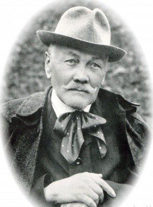

Obec ako správna jednotka vznikla v roku 1936 zlúčením osád Vörösmajor (pôvodne Apponyiovský, neskôr Pálffyovský majetok), Jozefmajor a Németšók (majetok Wiener-Weltenovcov). Na tieto osady, ktoré sa nachádzali pôvodne v katastrálnych územiach obcí Štvrtok na Ostrove a Mierovo boli v rámci I. pozemkovej reformy dosídlení kolonisti 69 rodín. Počet obyvateľov v roku 1924 bol 180, ale už v roku 1929 stúpol na 310. V kolónií Hviezdoslavov bola zriadená prvá slovenská škola na Žitnom ostrove. V roku 1938 zo 69 tu žijúcich rodín bolo 21 slovenských, 18 moravských, 15 českých, 14 maďarských a 1 nemecká rodina.
Obec v rokoch 1938 – 1945 stala súčasťou Štvrtku na Ostrove. Ako samostatná obec opäť vznikla v roku 1945. Pozornosť si zasluhujú v obci budovy Pálffyho majera, pomník P. O. Hviezdoslava z roku 1971 a budovy majera Wienera – Welten.
Pozoruhodnosti
V západnom rohu námestia obce sa nachádzajú budovy bývalého Pálffyho majera. Tento tvorili byty čeľadníkov, sýpky, maštale, hospodársky stavba. Dvor od juhu uzatvárala budova obydlia správcu majera. Prízemné budovy na pôdoryse v tvare písmena U majú znaky hospodárskych budov z 2. polovice 19. storočia. Časť majera sa využíva na obytné účely a skladové účely. V časti východného krídla bola umiestnená prvá slovenská škola na Žitnom ostrove, naposledy bol v nej kultúrny dom. Dnes sú priestory bývalej starej školy prázdne. Obydlia správcu majera je prízemná stavba s pôdorysom v tvare L, dnes tu sídli obecný úrad a využíva sa aj na kultúrne účely. Stavba bola viackrát prestavaná, trojdielne okná v šambránach sú novšie. K majeru patrila aj trojpodlažná sýpka na obdĺžníkovom pôdoryse, zbúraná v 60. rokoch 20. storočia. Posledné zvyšky sýpky boli odstránené roku 1970, ne jej mieste pri parku Pavla Országha Hviezdoslava stojí súkromný dom.
Na námestí v parku stojí pomník Pavla Országha Hviezdoslava z roku 1971, dielo akademického sochára Tibora Baníka a akademického architekta R. Janáka. Na jednej lavičke je nápis: "Na pamiatku básnika slovenského ľudu pomenovali oravskí rodáci roku 1921 novozaloženú obec Hviezdoslavov. Pamätník bol postavený na 50. výročie smrti básnika a založenia obce. Október 1971."
Na druhej strane cesty oproti parku sa nachádza vysoká zvonica železnej konštrukcie. Zvon bol zakúpený z prostriedkov získaných z obecnej poľovačky. Dňa 9. apríla 1934 bol zvon zavesený na zvonicu, ktorá bola vysvätená v septembri roku 2007.
Na druhom konci námestia bola v rokoch 1928-29 postavená "Jubilejná škola 1928". Je to funkcionalistická prízemná budova s pôdorysom v tvare L, ktorej fasády členia veľké trojdielne okná v šambránach, na šesťosovom priečelí so spojeným frontónom. Budovu postavil staviteľ Krátky. R. 1977 bolo školské vyučovanie v budove zrušené, ale od roku 1996 bolo pre ročníky 1. – 4. ZŠ obnovené.
V miestnom cintoríne je ústredný kríž z roku 1954 s plastikou Ukrižovaného. Dom smútku bol postavený v rokoch 1962-63 na mieste menšej stavby.
V obci sa zachovalo viacero pôvodných domov kolonistov...
V časti obce Podháj v bývalej osade Németšok návštevníka v prvom rade upúta rozsiahla budova maštale Weinera – Weltena. Bol to kravín, pri bočnom vchode s mliečnicou a ľadovňou. Oproti domu na druhej strane cesty dodnes stojí kuriálna stavba obydlia správcu majera z 1. polovice 19. storočia. Je to prízemná obdĺžníková budova s plytkým rizalitom hlavnej fasáde. Na križovatke poľných ciest oproti nárožiu veľkej maštale ešte nedávno stál jednoduchý drevený kríž.
Na konci časti obce Podháj pri križovatke ciest dodnes stojí horáreň postavená v polovici 19. storočia ako obydlie hájnika veľkostatku grófa Apponyiho, neskôr rytiera Weinera – Weltena. Budova dodnes slúži na obytné účely.
Pavol Országha Hviezdoslav
